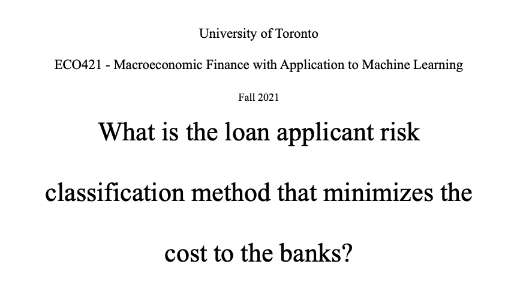

Cost Efficient Classifications for Predicting Credit Default
This is a project that choosing the most cost efficient classification model for predicting credit default.
We evaluated models including logistic regression, decision tree, naive bayes, and random forest.
The data is from the Home Credit, an financial services company in Russia, and it contains 307,511 records and 122 features.
The project aims to find the most cost-efficient classification model for predicting credit default.